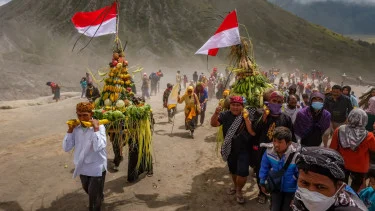
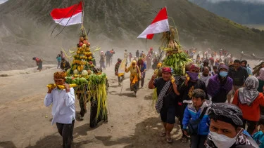

🔥 Latar Belakang Sejarah Yadnya Kasada
Upacara Yadnya Kasada adalah manifestasi ketaatan Suku Tengger yang kental dengan legenda **Roro Anteng** dan **Joko Seger**. Kisah epik ini bukan sekadar dongeng, melainkan fondasi spiritual yang membentuk identitas komunitas yang bermukim di lereng Gunung Bromo, Tengger, Jawa Timur. Mereka adalah keturunan langsung dari pelarian kerajaan Majapahit yang memilih melarikan diri ke pegunungan untuk mempertahankan keyakinan Hindu-Buddha mereka saat Islam menyebar di Nusantara. Karena itu, tradisi mereka unik, mencampurkan elemen Hindu Dharma Jawa dan kearifan lokal.
Asal Mula Legenda Pasangan Abadi
Legenda menceritakan tentang pasangan suami-istri yang lama mendambakan keturunan: Roro Anteng (putri Raja Brawijaya) dan Joko Seger (putra seorang Brahmana). Setelah bertahun-tahun berdoa, mereka bersemedi di puncak Gunung Bromo. Dewa-dewi mengabulkan doa mereka, menjanjikan keturunan, dengan satu syarat yang sangat berat: **anak bungsu mereka harus dipersembahkan ke Kawah Bromo sebagai tumbal**. Pasangan ini dikaruniai 25 anak, yang kini menjadi simbol klan Suku Tengger yang besar.
"Anak bungsu kami, Raden Kusuma, ia adalah pengorbanan suci yang menyelamatkan klan kami. Kami berjanji, setiap tahun kami akan mengenang pengorbanan itu dengan sesembahan hasil bumi."
Pada saatnya, Roro Anteng dan Joko Seger ingkar janji. Namun, alam murka dan Raden Kusuma diculik oleh Kawah Bromo. Sebelum hilang, suara gaib Raden Kusuma memerintahkan keluarganya untuk mempersembahkan hasil bumi dan ternak sebagai ganti dirinya. Sejak saat itulah, tradisi Yadnya Kasada lahir, menjadi bukti ikatan darah, janji, dan pengorbanan yang tak lekang oleh waktu, dirayakan setiap tahun di bulan Kasada.
🕯️ Makna dan Prosesi Suci Yadnya Kasada
Yadnya Kasada, atau juga dikenal Kasodo, dilaksanakan pada hari ke-14 bulan Kasada dalam kalender tradisional Jawa. Upacara ini memiliki makna teologis yang mendalam, yakni permohonan ampun dan keselamatan kepada Sang Hyang Widhi Wasa serta ungkapan terima kasih atas panen yang melimpah (Puji Syukur).
Rangkaian Ritual Inti
- Persiapan dan Nglukat (Pembersihan Diri): Beberapa hari sebelum puncak, masyarakat melakukan puasa dan laku spiritual untuk membersihkan diri dari segala kekotoran, menyiapkan batin mereka menyambut malam suci.
- Sowan ke Dukun Pandita: Masyarakat mendatangi Dukun Pandita (pemimpin agama) untuk memohon doa restu dan air suci (Tirta) yang akan digunakan selama ritual. Di sinilah 'Ongkek' (sesaji yang akan dipersembahkan) diberkati.
- Puncak Ritual di Pura Luhur Poten: Pada dini hari (sekitar pukul 00.00), acara dimulai di Pura Luhur Poten, Lautan Pasir Bromo. Dukun Pandita memimpin doa-doa dalam bahasa Jawa Kuno, memohon keselamatan dan berkah.
- Perjalanan ke Kawah: Massa bergerak menaiki lereng Bromo. Pemandangan ribuan orang membawa obor dan sesaji di tengah kegelapan lautan pasir adalah momen yang paling dramatis.
- Persembahan ke Kawah (Labuhan): Ini adalah momen klimaks. Dengan penuh keikhlasan, Ongkek yang berisi hasil bumi, ternak, dan barang berharga dilemparkan ke dalam kawah. Tindakan ini melambangkan pemenuhan janji dan pengorbanan suci. Sebagian masyarakat luar sering menunggu di dasar kawah untuk menangkap kembali Ongkek yang mereka anggap membawa keberuntungan.
Ritual ini menyimbolkan keseimbangan kosmis antara gunung sebagai tempat bersemayam dewa dan kawah sebagai 'dapur' alam yang meminta persembahan, menjaga harmoni antara manusia dan lingkungannya.
🌱 Filosofi Hidup Suku Tengger
Selain ritual tahunan, Suku Tengger dikenal memegang teguh filosofi hidup yang selaras dengan alam. Tiga pilar utama membentuk cara pandang mereka terhadap dunia, menjamin keberlanjutan tradisi dan lingkungan:
1. Tri Hita Karana
Konsep yang menekankan hubungan harmonis antara manusia dengan Tuhan (Parhyangan), manusia dengan sesama (Pawongan), dan manusia dengan alam (Palemahan). Di Bromo, Gunung dianggap sebagai leluhur agung yang harus dihormati dan dijaga kesuciannya, sebuah manifestasi dewa.
2. Kesederhanaan (Nrimo Ing Pandum)
Hidup sederhana dan menerima apa adanya adalah ajaran turun temurun. Mereka percaya bahwa kekayaan sejati ada pada ketenangan batin dan kelimpahan hasil bumi yang dianugerahkan oleh alam. Sikap ini membantu mereka bertahan dalam kondisi hidup pegunungan yang keras dan terpencil.
3. Semangat Yadnya (Pengorbanan Tulus)
Setiap tindakan harus didasari oleh semangat pengorbanan yang tulus. Bukan hanya Kasada, tetapi setiap aspek kehidupan mereka, seperti menanam, memanen, dan menjaga adat, adalah bentuk 'yadnya' demi kebaikan bersama dan kelanjutan siklus hidup spiritual komunitas. Ini adalah inti dari kearifan lokal Tengger.
Filosofi ini memastikan bahwa Warisan Tengger tidak hanya bertahan dalam ritual spektakuler, tetapi juga dalam etika sehari-hari dan cara mereka berinteraksi dengan Taman Nasional Bromo Tengger Semeru.
📸 Galeri Dokumentasi Foto
Momen-momen di Yadnya Kasada adalah perpaduan antara keindahan alam dan kekhusyukan spiritual. Berikut adalah beberapa cuplikan visual dari ritual agung tersebut:
 

📍 Lokasi Upacara: Pura Luhur Poten, Kawah Bromo
Upacara ini berpusat di Pura Luhur Poten, sebuah pura suci yang terletak di tengah Lautan Pasir Gunung Bromo. Pura ini menjadi tempat berkumpulnya umat Hindu Tengger sebelum bergerak menuju bibir kawah. Lokasi ini mudah dijangkau dari empat pintu masuk utama:
Titik Koordinat Utama: Lautan Pasir, Kawasan Taman Nasional Bromo Tengger Semeru, Jawa Timur.
Catatan Penting: Akses terbaik menuju lokasi adalah melalui kota terdekat (Probolinggo/Malang) dilanjutkan dengan menyewa kendaraan 4x4 (Jeep) dari desa-desa sekitar (Cemoro Lawang, Tosari) untuk melintasi lautan pasir.